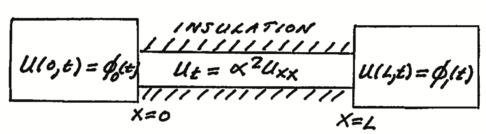

(19.14) \[\begin{split}
\begin{eqnarray}
u_t & = & \alpha^2 u_{xx},\qquad 0<x<L\nonumber\\
\mbox{BC: } u(0,t) & = & \phi_0 (t)\quad u(L,t)=\phi_1 (t)\quad
\nonumber\\
\mbox{IC: } u(x,0) & = & f(x).
\end{eqnarray}
\end{split}\]

Fig. 19.1 Bar subject to a time-dependent Dirichlet BC.
Let \framebox{\(\displaystyle w(x,t)=\phi_0
(t)+x\left(\frac{\phi_1(t)-\phi_0(t)}{L}\right)\) } \(\Rightarrow
w(0,t)=\phi_0 (t)\) ; \(w(L,t)=\phi_1(t)\) . Now let
\(u(x,t)=w(x,t)+v(x,t)\) . Then
(19.15) \[\begin{split}
\begin{eqnarray}
w_t+v_t & = & \alpha^2 (w\!\!\!\!\!\nearrow_{\!\!\!\! xx}+v_{xx})\nonumber\\
v_t & = & \alpha^2 v_{xx}-w_t\qquad w_t=\dot{\phi}_0
+\frac{x}{L}(\dot{\phi}_1-\dot{\phi}_0)\nonumber\\
\mbox{BC: } u(0,t) & =& \phi_0(t)=w(0,t)+v(0,t)=\phi_0
(t)+v(0,t)\Rightarrow v(0,t)=0\nonumber\\
u(L,t) & = & \phi_1(t)=w(L,t)+v(L,t)=\phi_1(t)+v(L,t)\Rightarrow
v(L,t)=0\nonumber\\
\mbox{IC: }u(x,0) & = & f(x)=w(x,0)+v(x,0)\Rightarrow
v(x,0)=f(x)-w(x,0).
\end{eqnarray}
\end{split}\]
Thus we need to solve the following BVP for \(v(x,t)\) :
(19.16) \[\begin{split}
\begin{eqnarray}
v_t & = & \alpha^2 v_{xx}-w_t\nonumber\\
\mbox{BC: }v(0,t) & = & 0\quad v(L,t)=0\\
\mbox{IC: }v(x,0) & = & f(x)-w(x,0).\nonumber
\end{eqnarray}
\end{split}\]
Now \(v(x,t)\) can be found using an eigenfunction expansion. The
eigenfunctions and eigenvalues associated with the Dirichlet B C are
(19.17) \[\begin{split}
\begin{eqnarray*}
\lambda_n &=&\left(\frac{n\pi}{L}\right)\quad n=1,2,\ldots\quad X_n(x)=\sin (\lambda_n x)\\
\mbox{let }S(x,t)&=& -w_t \\
&=& - {(\dot{\phi}_1
-\dot{\phi}_0)\left(\frac{x}{L}\right) -\dot{\phi}_0} \\
&=& \sum\limits_{n=1}^\infty \hat{S}_n (t)\sin (\lambda_n x)\\
\mbox{and }v(x,t)&=&\sum\limits_{n=1}^\infty \hat{v}_n(t)\sin (\lambda_n x)\\
\mbox{then }v_t&=&\sum\limits_{n=1}^\infty \dot{\hat{v}}_n (t)\sin
(\lambda_nx)\mbox{ and }
v_{xx}=\sum\limits_{n=1}^\infty \hat{v}_n (t)\left\{ -\lambda_n^2\right\}\sin (\lambda_n x)\\
\mbox{thus }0&=&v_t -\alpha^2 v_{xx}-S(x,t)
\end{eqnarray*}
\end{split}\]
Therefore
(19.18) \[
\begin{eqnarray}
0=\sum\limits_{n=1}^\infty\left\{
\dot{\hat{v}}_n+\alpha^2\lambda_n^2
\hat{v}_n-\hat{S}_n(t)\right\}\sin (\lambda_n x) \label{eigeneq}
\end{eqnarray}
\]
Since the eigenfunctions are linearly independent it follows that
\(\{\,\,\} =0\) in (19.18) or
(19.19) \[
\begin{eqnarray}
\frac{d\hat{v}_n}{dt} +\alpha^2 \lambda_n^2\hat{v}_n=\hat{S}_n (t)
\label{eigenode}
\end{eqnarray}
\]
but (19.19) is just a first order linear ODE with an
integrating factor
(19.20) \[
\begin{eqnarray*}
F(t)=e^{\alpha^2\lambda_n^2t}
\end{eqnarray*}
\]
Thus
(19.21) \[
\begin{eqnarray*}
\frac{d}{dt}\left( e^{\alpha^2\lambda_n^2t}\hat{v}_n(t)\right)
=e^{\alpha^2\lambda_n^2t}\hat{S}_n(t)
\end{eqnarray*}
\]
Integrating we obtain
(19.22) \[
\begin{eqnarray*}
e^{\alpha^2\lambda_n^2t}\hat{v}_n(t)=\int\limits_0^t
e^{\alpha^2\lambda_n^2\tau}\hat{S}_n(\tau )\, d\tau +c_n
\end{eqnarray*}
\]
or
(19.23) \[
\begin{eqnarray*}
\hat{v}_n(t)=\int\limits_0^t e^{-\alpha^2\lambda_n^2 (t-\tau
)}\hat{S}_n(\tau )\, d\tau +e^{-\alpha\lambda_n^2 t}c_n
\end{eqnarray*}
\]
Thus
(19.24) \[
\begin{eqnarray*}
v(x,t)=\sum\limits_{n=1}^\infty \left\{\int\limits_0^t
e^{-\alpha^2\lambda_n^2 (t-\tau )}\hat{S}_n(\tau )\, d\tau
+e^{-\alpha^2\lambda_n^2t}c_n\right\}\sin (\lambda_n x)
\end{eqnarray*}
\]
All we need to do to complete the solution of this problem is to
determine the coefficients \(c_n\) . These we obtain from the initial
condition as follows
(19.25) \[
\begin{eqnarray*}
g(x)-\left[\left\{\phi_1 (0)-\phi_0
(0)\right\}\left(\frac{x}{L}\right) +\phi_0 (0)\right]
=\sum\limits_{n=1}^\infty c_n\sin (\lambda_n x)
\end{eqnarray*}
\]
But this is just a Fourier sine series in which
(19.26) \[
\begin{eqnarray*}
c_n=\frac{2}{L}\int\limits_0^L\left( g(x)-\left[\left\{\phi_1
(0)-\phi_0 (0)\right\}\left(\frac{x}{L}\right) -\phi_0
(0)\right]\right)\sin\left(\frac{n\pi x}{L}\right)\, dx
\end{eqnarray*}
\]
Finally
(19.27) \[
\begin{eqnarray*}
u(x,t)=\left(\phi_1(t)-\phi_0 (t)\right)\left(\frac{x}{L}\right)
+\phi_0 (t)+\sum\limits_{n=1}^\infty\left\{\int\limits_0^t
e^{-\alpha^2\lambda_n^2 (t-\tau )}\hat{S}_n(\tau )\, d\tau
+e^{-\alpha^2\lambda_n^2t}c_n\right\}\sin\lambda_n x.
\end{eqnarray*}
\]
Specific case:
Let \(\phi_0(t)=At\) , \(\phi_1(t)=0\) , and \(f(x)=0\) . In this case
(19.28) \[
\begin{eqnarray}
w(x,t)=At+\frac{x}{L}(0-At)=At\left( 1-\frac{x}{L}\right) .
\end{eqnarray}
\]
(19.29) \[\begin{split}
\begin{eqnarray}
u_t & = & \alpha^2 u_{xx}\qquad 0<x<L\nonumber\\
\mbox{BC: }u(0,t) & = & At\quad u(L,t)=0\\
\mbox{IC: }u(x,t) & = & 0.\nonumber
\end{eqnarray}
\end{split}\]
Let \(u(x,t)=w(x,t)+v(x,t)\) where \(\displaystyle w(x,t)=At\left(
1-\frac{x}{L}\right)\) . Then
(19.30) \[\begin{split}
\begin{eqnarray}
v_t & = & \alpha^2 v_{xx}-A\left( 1-\frac{x}{L}\right)\nonumber\\
v(0,t) & = & 0=v(L,t)\\
v(x,0) & = & 0.\nonumber
\end{eqnarray}
\end{split}\]
Let
(19.31) \[\begin{split}
\begin{eqnarray}
s(x,t ) & = & -A\left( 1-\frac{x}{L}\right)
=\sum\limits_{n=1}^\infty \hat{s}_n(t)\sin\left(\frac{n\pi
x}{L}\right)\nonumber\\
\hat{s}_n & = & \frac{2}{L}\int\limits_0^L
A\left(\frac{x}{L}-1\right)\sin\left(\frac{n\pi x}{L}\right)\, dx\\
& = & -\frac{2A}{n\pi}.\nonumber
\end{eqnarray}
\end{split}\]
Now let
(19.32) \[\begin{split}
\begin{eqnarray}
v(x,t) & = & \sum\limits_{n=1}^\infty
\hat{v}_n(t)\sin\left(\frac{n\pi x}{L}\right)\nonumber\\
\\
v_t & = & \sum\limits_{n=1}^\infty
\dot{\hat{v}}_n(t)\sin\left(\frac{n\pi x}{L}\right), \quad
v_{xx}=-\sum\limits_{n=1}^\infty \hat{v}_n(t){\left(\frac{n\pi
}{L}\right)}^2\sin\left(\frac{n\pi x}{L}\right) .\nonumber
\end{eqnarray}
\end{split}\]
Therefore
(19.33) \[
\begin{eqnarray}
0=v_t-\alpha^2 v_{xx}-s(x,t)=\sum\limits_{n=1}^\infty\left\{
\dot{\hat{v}}_n(t)+\alpha^2 {\left(\frac{n\pi}{L}\right)}^2
\hat{v}_n+\frac{2A}{n\pi}\right\}\sin\left(\frac{
n\pi x}{L}\right) .
\end{eqnarray}
\]
Therefore
(19.34) \[\begin{split}
\begin{eqnarray}
\dot{\hat{v}}_n(t)+\alpha^2 {\left(\frac{n\pi}{L}\right)}^2
\hat{v}_n(t) & = & -\frac{2A}{n\pi}\\
\left( \{\rm\ e\}^{+\alpha^2
{\left(\frac{n\pi}{L}\right)}^2t}\hat{v}_n(t)\right) & = &
-\frac{2A}{n\pi}\{\rm\ e\}^{\alpha^2 {\left(\frac{n\pi}{L}\right)}^2 t}\\
\{\rm\ e\}^{\alpha^2\left(\frac{n\pi}{L}\right)^2 t}\hat{v}_n(t) & = &
-\frac{2AL^2}{\alpha^2(n\pi )^3}
\{\rm\ e\}^{\alpha^2\left(\frac{n\pi}{L}\right)^2 t}+B_n\\
\hat{v}_n(t) & = &
-\frac{2AL^2}{\alpha^2 (n\pi )^3}+B_n
\{\rm\ e\}^{-\alpha^2\left(\frac{n\pi}{L}\right)^2 t}\\
0=\hat{v}_n(0) & = & -\frac{2AL^2}{\alpha^2(n\pi )^3}+B_n.
\end{eqnarray}
\end{split}\]
Therefore
(19.35) \[
\begin{eqnarray}
\hat{v}_n(t) & = & \frac{2AL^2}{\alpha^2(n\pi)^3}
\left(\{\rm\ e\}^{-\alpha^2\left(\frac{n\pi}{L}\right)^2 t}-1 \right) .
\end{eqnarray}
\]
Therefore
(19.36) \[
\begin{eqnarray}
u(x,t)=At\left(1-\frac{x}{L}\right) +
\frac{2AL^2}{\pi^3\alpha^2}\sum\limits_{n=1}^\infty
\frac{(\{\rm\ e\}^{-\alpha^2\left(\frac{n\pi}{L}\right)^2 t}-1)}{n^3}
\sin\left(\frac{n\pi x}{L}\right) .
\end{eqnarray}
\]